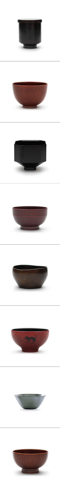

Archives : 2011-04
放假前的晚上。 @ Apr 29, 2011
这会儿luke趴在地上呼呼大睡，我躺在沙发上，土豆的下巴搁在前爪上趴在我身边，睁着眼睛望着我，家里安静极了。这样的夜晚已经很少很少，不是匆忙洗澡睡觉，便是到家的时候很晚。因为陪伴它们的时间少，最近会刻意延长散步时间。今晚户外都是热风，走着走着出了一身细密的汗珠，luke的脚步显得比平时缓慢。很远处有人大声亮了一嗓子，忽然脑子里蹦出＂无产阶级的声音＂的反映。没有遇见别的狗，没有遇见别的人，越走心里越安静，仿佛走在一片空白里。
昨晚十点多钟眼睛就睁不开了，沉沉的一觉睡到九点才醒，对八点的闹铃毫无知觉，今天疲劳感依旧，工作时还好，晚上散步回来又困又懒。人的精力终究是有限的，不是吗。忙起来什么都来不及想来不及消化的状况，的确有些可怕。另一个可怕的状况是没有欲望与他人交流更深的话题，最好有事说事，没事各自走人。不得不指望休假来调节，休假是件很重要的事儿。
楚楚动人 @ Apr 28, 2011


正当时 @ Apr 24, 2011
春季是最好的散步季节，可以闻到青草的味道。这一季，特别爱吃水果和各种蔬菜，野菜也正当时，只是清炒，各种自然的味道无比诱人。连我这个平时对蔬菜没太多爱的人，也爱上了。


解放鞋 @ Apr 24, 2011
如果在日本街头看到一位帅哥穿着土得掉渣的绿军鞋逛街，千万别诧异，这种早就被国人遗弃的解放军布鞋，摇身一变已成了时尚新宠儿。在美国，一双改良过的解放鞋甚至卖到了65美元，跟国际知名品牌NIKE同等价位。
自己用的时候没觉得好，人家一流行土包子们又患得患失。无论什么用品自己喜欢最重要，不是因为品牌，价格，以及别人如何看待才入手。你说这东西如何好，如何贵，人家表情茫然，不以为然。没有共鸣，何来爱呢。当然很多人即使没有共鸣，也会跟着人家屁股后面团团转，人以群分，物以类聚，有些崇尚的是他人眼光，有人追求的是自己的乐趣。多数人还是随大流，就这么回事，生怕流行里惟独少了一个自己。
记得去年几乎半成以上的文艺小青年都穿双回力鞋，那么多人一起穿，也就不特别了，再说了那小白鞋一出脚汗，鞋四周泛黄，而特容易臭脚，小时候都有体会。流行一旦身处中国，最终都会让人杀心四起，腻味到翻胃。今年会不会许多小青年一起穿老解放鞋呢？

DRESS BLOG @ Apr 19, 2011

茶器 @ Apr 15, 2011
爱，每件茶器上都留有不同的日常。

松屋．陶作 @ Apr 15, 2011
弱设计。
何谓“弱”？答曰：以一种谦虚低调的方式，将东方美学、禅意的意念贯穿在整个设计中，看似柔弱，其实有内在的高调，需要心去体会，而不是简单的视觉形式冲击，从而留给人与自然、美学更多的对话及留白空间。

via happy老小儿
取.舍 @ Apr 12, 2011

“人前有多风光，人后就有多无奈。”今天听到的一句颇可以琢磨一番的话，出自一位生意人之口。想来多数人还是靠后天辛苦努力去积累经历和经验，获取财富，错过许多电视，错过许多下午阳光，常常晚上10点左右到家。有人对他的太太说：“那你看看又有多少女性开顶级轿车，常常能买世界一线名牌呢？”
其实无论拿财富去换取什么，努力工作，总没什么可耻的。只是，我们常常限在一个怪圈中无法自拔。
Be still my heart @ Apr 08, 2011
周末下班路上听到CD里播放的这首挪威歌手演唱的Be still my heart ,很适合黑夜中驾车行驶听的音乐，美好又忧伤。忘记上次专注听歌是什么时候？
My heart's not lonely or broken
Is not of ice or of gold
Nor has my heart ever spoken
To me when a love has grown cold
I felt not the faintest flutter
When you brushed my cheek as you passed
Nor will I willingly clutter
My life with these things that don't last
Be still my heart
My heart be still
If our eyes should meet then so-be-it
No need to trouble a heart that's hidden
Where no-one can free it
Only to tear it apart
Be still my heart
My heart be still
Beware, beware, beware
Take care, take care
Be still my heart
My heart be stil
阳光就是一切 @ Apr 07, 2011
雨后第二天拍的，这一天多云，有点冷。
假期三天哪儿也没去，尽在家里洗衣服，无休止的洗衣服。收拾橱柜，无休止的收拾橱柜。尽然一顿饭也没烧，没烧。天天晚上在家看电影，看电影。休息的最后一天需要出差，各种原因推掉，推掉。最主要的原因还是哪儿也不想去。
哪儿也不想去的生活，阳光就是一切。


初做理发师 @ Apr 07, 2011
用了今天刚入手的宠物剃毛器，给LUKE和土豆剃毛。不敢下手太快，给土豆剃了眼睛下面的毛，剃短了胡子，雪纳瑞变成了晏鼠。给LUKE头顶和耳朵里面的毛剃了剃，不小心在它脑门上剃出两个浅色的点，英卡成了二郎神。理发师不好干呐。